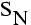
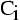
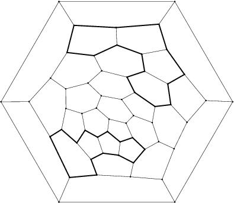
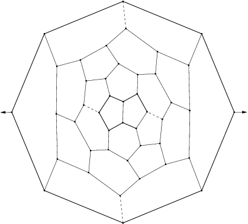
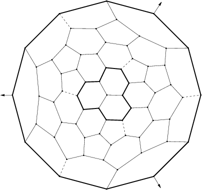
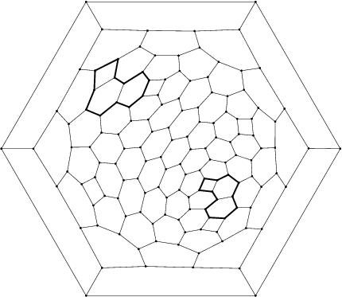

The series 
The number N must be even. The group is the group generated by the composition of a rotation of angle 2pi/N with axis D and a plane symmetry P with P orthogonal to D.
Features
- Algebraic structure: it is the cyclic group of order N
- Kind of elements
- N/2 elements: composition of rotation of angle (1+2k)2pi/N and plane symmetry P,
- N/2 elements: rotation of angle k4pi/N with axis D.
- Particular cases
- if N=2, then the group is just one central symmetry and is denoted .
- Examples
- First Fulleren of symmetry :

- First Fulleren of symmetry S4:

- First Fulleren of symmetry S6:

- First 4n of symmetry :
